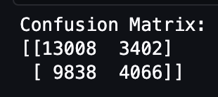
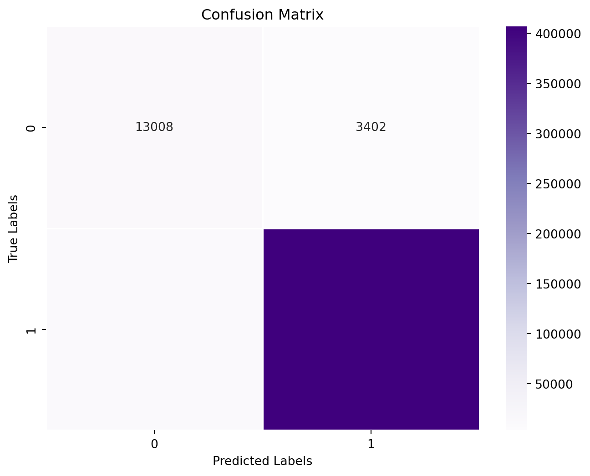
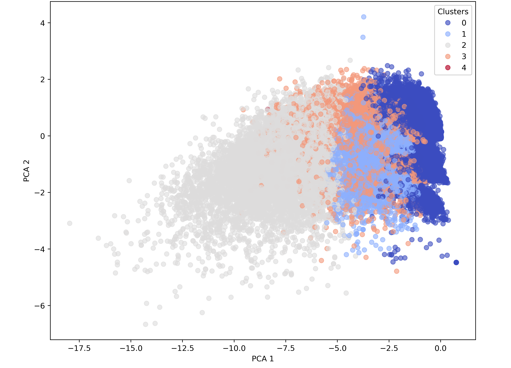

╒══════════════════════╤═════════╕
│ label │ count │
╞══════════════════════╪═════════╡
│ no perceived misinfo │ 367441 │
│ perceived misinfo │ 76555 │
╘══════════════════════╧═════════╛Machine Learning Analysis
Executive Summary
For our Machine Learning (ML) we had two goals: to predict what articles would be percieved as misindotmation and to examine the network analysis between topics. We used logistic regression to predict if an article would be percieved as misinformation. We used the top 10 words in each topic as dummy variables to assist in our prediction. Though this did not lead to high accuracy, there were some interesting findings which we will detail below.
Misinformation article Prediction
We used the following steps in our Logistic Regression model:- Group by article ID and get count of comments with misinformation indicators
- Any article with one or more misinformation indicators will be a perceived misinformation article
- Merge this dataframe with a dataframe containing the id, topic and title of the article
- Delete duplicates since the previous data frame was each row as a comment under article
- Add dummy columns for top words in articles
- Convert label and topic columns to numerical representation
- Create a vector for the topics column
- Create a features vector containing the terms columns and topic column
- Use features vector in the logistic regression model
Table 4.1 : Articles with Misinformation Counts
Table 4.1 shows the original data frame with uneven classes. Since articles with misinformation comments were underrepresented, we decided to undersample the articles with no misinformation comments, resulting in the ratio shown in the next table.
╒══════════════════════╤═════════╕
│ label │ count │
╞══════════════════════╪═════════╡
│ no perceived misinfo │ 91922 │
│ perceived misinfo │ 76555 │
╘══════════════════════╧═════════╛Table 4.2 : Undersampling Counts
Figure 4.1 : Articles with Misinformation Counts
Table 4.2 shows the sample from the entire dataset when undersampling the articles with no comments claiming misinformation. Here, we can see that the classes are almost equa, allowing us to proceed with the logistic regression.
The model had an accuracy of about 56% on the test data and 54% on the training dataset. The confusion matrix is shown below.

Table 4.3 : Confusion Matrix

Figure 4.3 : Articles with Misinformation Counts
╒═══════════════════╤══════════════╤═══════════════╤══════════════════════════════════╤═════════════════════════════════════╤══════════════╤═════════════════════════════════════╕
│ topic │ true label │ false label │ incorrectly labeled as misinfo │ incorrectly labeled as no misinfo │ true ratio │ incorrectly labeled misinfo ratio │
╞═══════════════════╪══════════════╪═══════════════╪══════════════════════════════════╪═════════════════════════════════════╪══════════════╪═════════════════════════════════════╡
│ emerging tech │ 10128 │ 7238 │ 1237 │ 6001 │ 0.583209 │ 0.829096 │
│ social media │ 8416 │ 6519 │ 2918 │ 3601 │ 0.563509 │ 0.552385 │
│ current events │ 8745 │ 6909 │ 3118 │ 3791 │ 0.558643 │ 0.548705 │
│ covid │ 7345 │ 4668 │ 599 │ 4069 │ 0.611421 │ 0.87168 │
│ russia&ukraine │ 25208 │ 19796 │ 4751 │ 15045 │ 0.560128 │ 0.760002 │
│ demographic info │ 3962 │ 2823 │ 269 │ 2554 │ 0.583935 │ 0.904711 │
│ tv shows │ 3719 │ 2196 │ 108 │ 2088 │ 0.62874 │ 0.95082 │
│ foriegn relations │ 9750 │ 7322 │ 1615 │ 5707 │ 0.571111 │ 0.779432 │
╘═══════════════════╧══════════════╧═══════════════╧══════════════════════════════════╧═════════════════════════════════════╧══════════════╧═════════════════════════════════════╛Table 4.4 : Logistic Regression Table
Figure 4.4 : Articles with Misinformation Counts
Overall, the model was not too accurate. The table below shows analysis by topic. We can see that the model was slightly more accurate at predicting perceived misinformation in COVID news and TV shows. It was slightly less accurate at predicting misinformation in current events. The final column shows the ratio of articles incorrectly labeled as containing no misinformation comments over the total number of falsely predicted articles. It basically shows the ratio of false negatives over false positives and false negatives. We can see the ratio is significantly higher for the topics: tv shows, demographic information, and covid. Foreign events and social media have the smallest ratio at about .55.
Relation between Misinformation and Covid
In this section of our study, we delve into the relationship between COVID-19 dynamics, such as confirmed cases and vaccination rates, and the prevalence of misinformation within news-related subreddits. Our objective is to determine if significant intersections exist between the progression of the pandemic and the spread of misinformation online.
To achieve this, we first analyze the correlation between two sets of data: COVID-19 statistics and counts of misinformation instances. This analysis will help us understand the degree to which these variables move in tandem, if at all. Following the correlation study, we employ linear regression techniques to assess how effectively pandemic-related data can predict the volume of misinformation. This model will allow us to evaluate the predictive power of COVID-19 variables on misinformation trends. Google COVID-19 Vaccination Data
Data Preparetion
To conduct a time-series analysis on COVID-19 and Reddit data, we first clean and standardize the date formats to ensure consistency. We then group both datasets by year, week, and month to analyze trends over specific time intervals. Relevant metrics such as case counts for COVID-19 and post counts for Reddit are aggregated accordingly. Finally, we merge the datasets based on their time groupings, preparing them for detailed correlation analysis and regression modeling. This process ensures our data is well-aligned and reliable for examining the relationship between pandemic trends and misinformation on Reddit.
Figure 4.5 : Articles with Misinformation Counts
This line graph displays the monthly trends of confirmed COVID-19 cases alongside the number of people vaccinated against the virus from January 2020 to January 2023. The red line represents confirmed cases, peaking sharply around mid-2021, indicating significant waves of the pandemic. In contrast, the blue line illustrates the vaccination rates, which show a gradual increase as vaccines become available and then start to plateau as more of the population becomes vaccinated. This visual representation helps identify periods where increased cases might correlate with changes in misinformation spread on platforms such as Reddit.
Figure 4.6 : Correlation Matrix of Reddit and COVID Data
The correlation matrix provides a detailed look at how different variables relate to each other. Notably, there is a very high correlation (almost 1.0) between the counts of comments and misinformation, suggesting that misinformation topics tend to generate significant discussion or engagement on Reddit. Lesser, yet positive correlations exist between misinformation counts and confirmed COVID-19 cases, indicating a potential increase in misinformation during higher transmission periods. Negative correlations between post counts and confirmed cases suggest that higher infection rates might not necessarily lead to an increase in the number of posts, possibly due to overwhelmed users or changing public interest over time. The matrix also shows strong correlations between different vaccination metrics and how these relate to public discourse on Reddit, hinting at the impact of vaccination campaigns on misinformation dynamics.
| Mean Squared Error | R² Score |
|---|---|
| 13161475.249450391 | 0.132 |
Table 4.5 Linear Regression
The evaluation of the linear regression model revealed a Mean Squared Error (MSE) of 13,161,475.249 and an R² Score of 0.1317. These metrics indicate a significant deviation of the model’s predictions from the actual data, with only about 13% of the variance in misinformation counts explained by the model. This suggests that the selected features, primarily COVID-19 statistics like confirmed cases and vaccination rates, provide limited insights into the spread of misinformation.
The investigation into the relationship between COVID-19 dynamics and the prevalence of misinformation on Reddit reveals complex interactions influenced by pandemic progression. Despite our rigorous data preparation and analysis, including correlation studies and regression modeling, the predictive power of COVID-19 statistics on misinformation trends remains limited. The linear regression model showed a significant Mean Squared Error (MSE) of 13,161,475.249 and a low R² Score of 0.1317, indicating that only 13% of the variance in misinformation counts could be explained through COVID-19 variables such as confirmed cases and vaccination rates. This underscores the need for integrating more comprehensive data and possibly more sophisticated analytical techniques to enhance the accuracy and effectiveness of predictions related to misinformation spread during health crises.
Clustering
Data Preparation
We streamlined the data preparation process for machine learning using a Pipeline that includes several stages: StringIndexer, OneHotEncoder, VectorAssembler, and Normalizer. This approach efficiently transforms and normalizes the data, ensuring it is ready for subsequent analysis and modeling.
Choose clustering methods
Choose several clustering algorithms to compare. Common choices include K-means, Hierarchical clustering, DBSCAN, Gaussian Mixture Models (GMM), and spectral clustering. Each method has its strengths and weaknesses. Table 4.4 : Comparison of Clustering Methods
| Clustering Method | Suitability for Data Types | Pros | Cons |
|---|---|---|---|
| K-means | Numerical data, well-separated clusters, clusters with similar sizes | - Simple and easy to implement - Scales well to large datasets - Works well with spherical clusters |
- Assumes clusters are spherical and equally sized - Sensitive to outliers - Requires predefined number of clusters |
| Hierarchical Clustering | Any data type, small to medium-sized datasets, clusters with irregular shapes | - No need to specify the number of clusters - Can handle clusters of different sizes and shapes - Provides a dendrogram for visualization |
- Computationally expensive for large datasets - Not suitable for large datasets due to memory constraints - Results can vary based on distance metric and linkage method |
| DBSCAN (Density-Based Spatial Clustering of Applications with Noise) | Data with noise and outliers, arbitrary-shaped clusters | - Robust to noise and outliers - Can find clusters of arbitrary shapes and sizes - No need to specify the number of clusters |
- Sensitivity to the epsilon and minPts parameters - Not suitable for high-dimensional data - Difficulty handling clusters of varying densities |
| Gaussian Mixture Models (GMM) | Data with overlapping clusters, probabilistic cluster assignments | - Can capture complex cluster shapes and overlapping clusters - Provides probabilistic cluster assignments - Flexible in terms of cluster covariance |
- Sensitive to initialization and local optima - Computationally expensive for large datasets and high-dimensional data - May converge to poor solutions for small datasets |
| Spectral Clustering | Non-linear data, graph-based data, clusters with arbitrary shapes | - Can find clusters of arbitrary shapes and sizes - Effective for non-linearly separable data - Robust to noise and outliers |
- Requires tuning of parameters such as the number of clusters and affinity matrix - Computationally expensive for large datasets - Difficulty handling large number of clusters |

Figure 4.2 : PCA of Clustering Results Based on News Titles
- Diversity and Overlap: The visualization shows both diversity and overlap among clusters. Clusters 1, 3, and 4 show more specific grouping characteristics that might correspond to unique news themes or linguistic styles, while Cluster 0 and 2 indicate broader or more common themes.
- Principal Components as Features: The PCA components are likely capturing underlying patterns in the usage of language across different news titles, which could be reflective of topic prevalence, sentiment, stylistic elements, or other latent features.
- Usefulness for Further Analysis: This kind of visualization is particularly useful for understanding how well the PCA and clustering algorithm have managed to discern and categorize the inherent structures in the data. It helps in deciding if further tuning is necessary, whether additional features should be considered, or if a different number of clusters might be more appropriate.